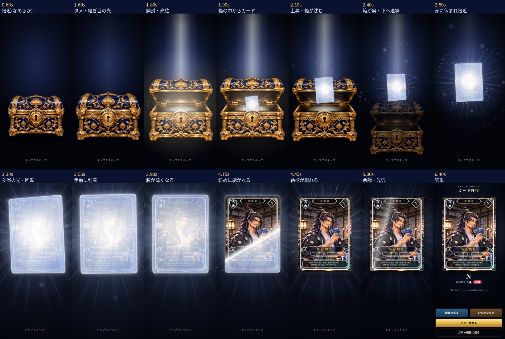
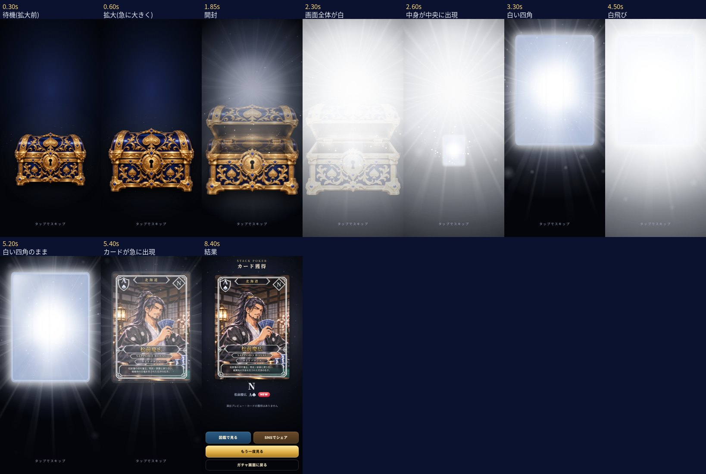

同じ条件: スマホを模した Chromium・390×844・手元の時計で 30fps。音はアプリと同じ予約の関数で書き出した効果音(サウンド ON)を合成。iPhone 実機ではない。
改修版を触る: https://imasanori0111-jpn.github.io/-stack-poker-test-web/gacha-n-v2/?gacha-preview=1&fixture=n(ログイン・抽選・カード付与なし。「演出を見る」。右上のチェックで音)
https://imasanori0111-jpn.github.io/-stack-poker-test-web/gacha-n-review-v2/compare-before-after.mp4
動画(音つき): https://imasanori0111-jpn.github.io/-stack-poker-test-web/gacha-n-review-v2/after/video.mp4
重要場面: https://imasanori0111-jpn.github.io/-stack-poker-test-web/gacha-n-review-v2/after/key-strip.jpg
PR #206 の録画ツール: https://imasanori0111-jpn.github.io/-stack-poker-test-web/gacha-n-review-v2/after/pr206-review.mp4
検査の数値: https://imasanori0111-jpn.github.io/-stack-poker-test-web/gacha-n-review-v2/after/analysis.json

動画(音つき): https://imasanori0111-jpn.github.io/-stack-poker-test-web/gacha-n-review-v2/before/video.mp4
重要場面: https://imasanori0111-jpn.github.io/-stack-poker-test-web/gacha-n-review-v2/before/key-strip.jpg
PR #206 の録画ツール: https://imasanori0111-jpn.github.io/-stack-poker-test-web/gacha-n-review-v2/before/pr206-review.mp4
検査の数値: https://imasanori0111-jpn.github.io/-stack-poker-test-web/gacha-n-review-v2/before/analysis.json

一覧(JSON): https://imasanori0111-jpn.github.io/-stack-poker-test-web/gacha-n-review-v2/index.json